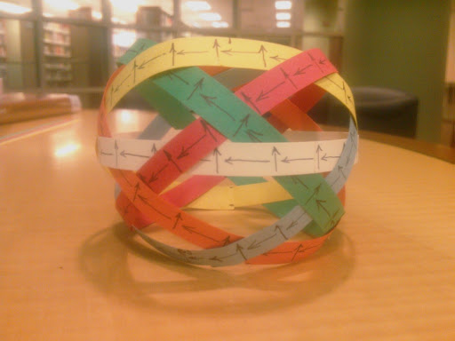
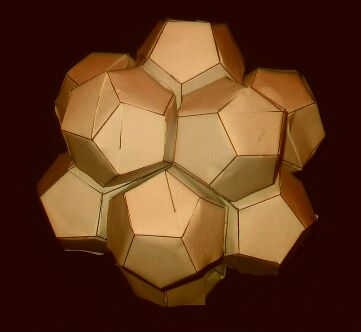
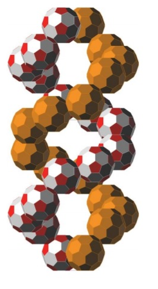
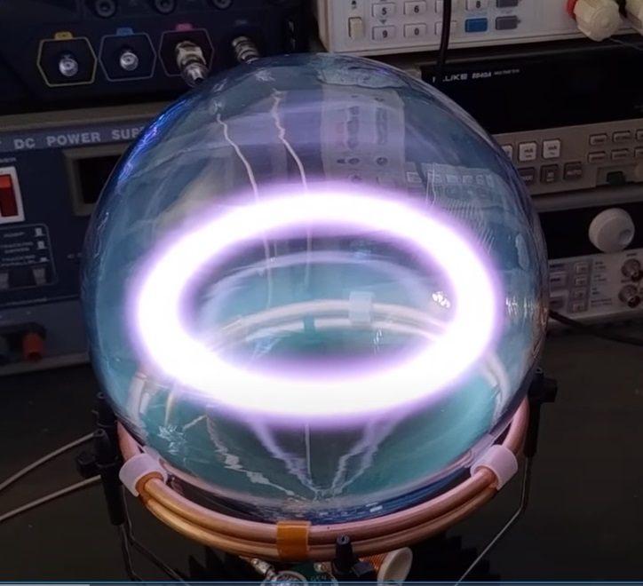
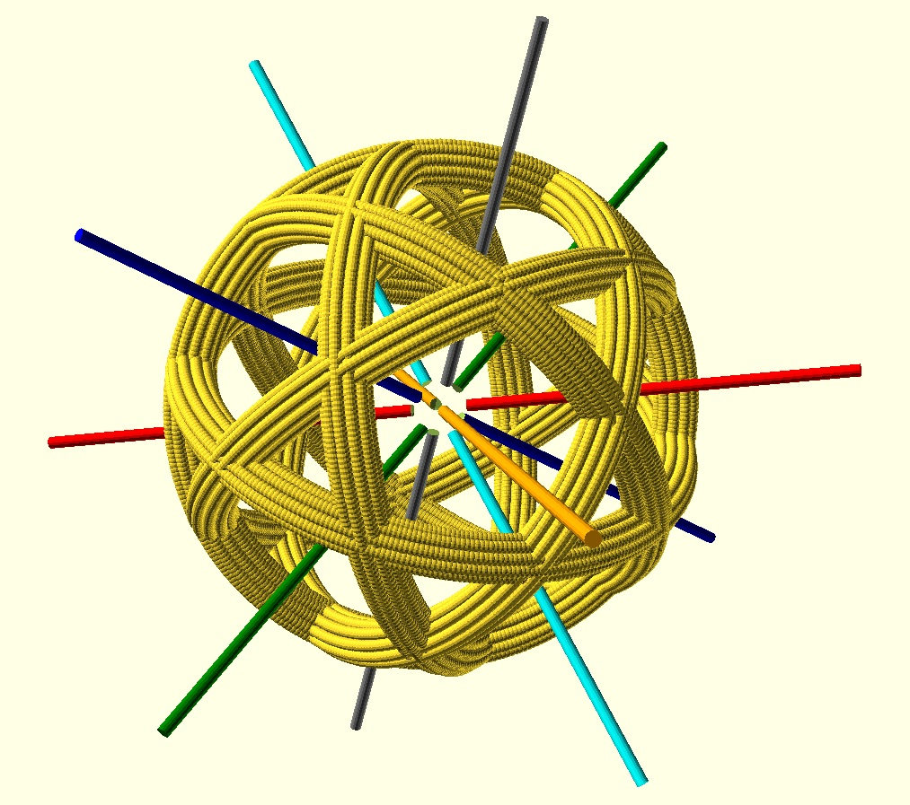
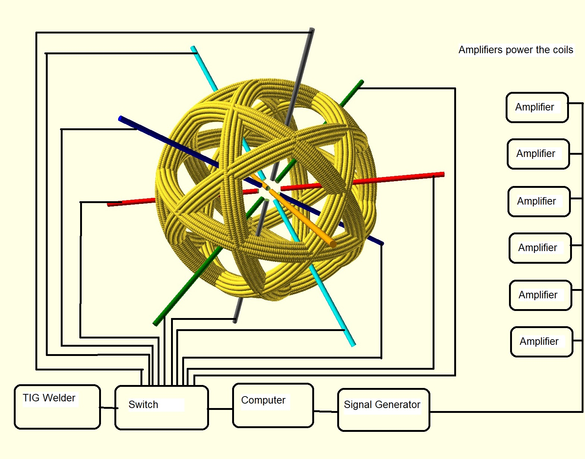
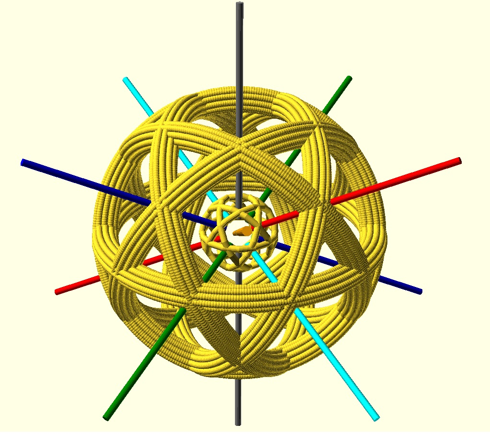

Additional Information Not Included In The Patent Application
|
Coils and Electrodes
|
Tensegrity Supports
|
Vessel Geometry
|
|

|

|

|
The device shown above is a spherical icosidodecahedron formed by 6 interwoven coils of wire rotated at equal angles to define a spherical space.
These 6 coils are electromagnets which can be energized and de-energized independently with AC or DC power of various waveforms, frequency, and amplitude.
The intended purpose is to confine plasma and compress it in order to achieve a fusion reaction.
A question here asks why the torus is used instead of a sphere to contain plasma.
My understanding is that too much heat is lost with a torus to sustain fusion because the plasma is stretched out around the reactor which exposes a lot of surface area.
So if it were possible to make a spherical magnetic container that should help.
The hairy ball theorem states that a sphere will always leak flux somewhere because it is not possible to map a smooth non-zero, and continuous vector field onto its surface.
The device I propose gets around this problem by constantly moving the opening in the magnetic field so that by the time the plasma has reached this opening, the opening has moved to a different location.
The plasma tries to follow the opening which causes it to rotate in pitch, roll, and yaw so that it cuts across the magnetic field lines of the coil which induces current and a secondary magnetic field in the plasma itself.
And since the plasma is rotating in three different axes, it also cuts across its own magnetic field which should cause compression.
I made the two paper models below to show that no matter what polarity is chosen for each of the six coils, the result must be expulsion of the plasma through one of the 12 pentagonal openings of the device.
Which one of the 12 openings that the plasma departs will depend on which way the current is flowing in each of the six coils.
Now imagine that before the plasma can be expelled from the device, the direction of current flow in the coils are changed so that the plasma starts moving to another one of the 12 exits.
And again, before the exit is reached, the current direction in the coils is changed again.
To accomplish this, each of the six coils is powered individually.
Six separate signals from a computer are fed to six channels of amplification which are then fed to the coils.
The interplay of the magnetic fields induced by the six coils is what makes the field rotate in pitch, roll, and yaw at the same time.
Or if current is maintained as shown by the paper models below then the plasma would be expelled.
This scenario is only covering the case where all the coils are energized at the same time to produce one of 12 possible directions that the plasma can move.
If we imagine that direction, frequency, wave form, and amplitude of the current in each coil can be managed individually at anytime then the possible motions which can be imparted to the plasma is truly infinite.


These devices could be clustered as shown in the model below, which was found on the Internet.

Or perhaps a track could be made as shown below which might be another way to impart spin to the plasma.
The model below was found on the Internet.

In a video found on the Internet and seen by clicking here or by clicking on the image below, the copper coil is referred to as the primary winding and the plasma toroid is referred to as the secondary winding.
My patent application is suggesting that by adding 5 more primary windings around the globe as seen in the very first photo at the top of this webpage, you will get much more control of the secondary winding (the plasma toroid).
And with six primary coils acting upon the plasma toroid secondary, it should be possible to bend the toroid such that it cuts across its own lines of flux which will have the effect of causing it to become attracted to itself.
The result should be compression into a ball where the heat and pressure can be concentrated.

The video found above helps to illustrate how a coil of wire can be used to create a plasma toroid.
But this is a low power device operating in near vacuum conditions.
The next question is how can we make a more powerful device that works in the open atmosphere?
There are three problems to solve.
1. Creating and sustaining the plasma.
2. Shielding the reaction from oxygen.
3. Manipulating the plasma.
1. Creating and sustaining the plasma.
As seen in the CAD drawing below, there are 12 pentagonal openings where it is possible to insert 12 tungsten or carbon electrodes toward the center to create arcs of plasma between the electrodes.
There are 20 more triangular openings for 20 more electrodes (not shown in the drawing) for a total of 32 electrodes defining a spherical volume near the center of the plasma bottle.
A commercial TIG welder might be perfect for use as a power supply for creating the arcs across the electrodes.
These types of power supplies can produce a very high frequency AC voltage which helps to start an arc without the need for the electrodes to touch.
By switching on and off various electrodes that create the arc in time with various coils which push or pull the arc, it should be possible to get the plasma to rotate and cut across its own field lines which will attract the plasma to itself and move it to the center of the magnetic bottle.
It may even be possible to wire the electrodes in parallel with the coils so that when magnetic fields collapse in the coils as voltage goes to zero, the voltage spike (flyback) will arc across the electrodes to excite the plasma more and more as the coils are turned on and off.
The CAD drawing below illustrates the whole idea.

2. Shielding the reaction from oxygen.
Since argon is heavier than atmospheric gasses, the entire device could be placed in a fish tank and flooded with argon.
The argon being heavy would displace all the air in the fish tank and would allow the creation of plasma arcs without the corrosive effects of oxygen on the electrodes.
Argon is the inert shielding gas typically used in TIG welding so it will be compatible with a TIG power supply.
The extreme heat released by the plasma will cause the argon to expand, rise, and leave the tank.
So a constant flood of new argon will be necessary.
So this is definitely not something which should be fully enclosed and confined unless a safe way to manage the pressure caused by the expanding argon has been put in place.
Don't breathe a lot of argon of course. Breathing a gas which does not contain oxygen will cause suffocation. Good ventilation will be necessary.
Containment Vessel plans as seen below which match the Plasma Bottle geometry are found in the original patent application
|
Six Interlocking
Bands
|
With Internal Tensegrity
Supports
|
Arranged Inside
|
Form A Pressure
Vessel
|
|

|

|

|
|
3. Manipulating the plasma.
Six channels of a twelve channel signal generator are used to select which of the six electrode pairs receive TIG welder output to create the plasma.
The other six channels feed six audio amplifiers which feed the six coils to manipulate the plasma.

Unlimited Nested Spheres: Internal Secondary Windings, Iron Cores, Water Jackets
The drawing below shows that you can have a smaller set of spherical windings inside a larger set.
This make look a bit like the fusor configuration but the 6 coils at the center are energized independently just like the outer coils.
So the purpose of the inner coils is greater ability to direct, twist, compress and otherwise control the plasma in ways that are not possible with the outer coils alone.
This smaller set could also be an iron core instead of a winding in which case the purpose would be to store magnetic energy.
The inner set of coils is shown in the drawing with a very small diameter.
This was to make the inner coils visible to you, the reader.
There is no reason the inner coils couldn't have nearly the same diameter as the outer coils and be locked together with an iron core.
In that case we have a rather interesting transformer with primary and secondary coils or we can have a stronger magnet.
If the inner coils are not locked to the outer coils but rather are free to move inside then we have a spherical induction motor.
It should also be noted that there is no limit to the amount of coils which can be nested for a very strong spherical magnet.
It should also be noted that each set of coils could be surrounded on both sides by a pressure vessel as shown in the drawings above to form a water jacket.

It will be some time before all the equipment is in place for this experiment.
In the meantime, I will to explore using the spherical electromagnet for computation.
There are 60 places about the spherical electromagnet where 2 coils intersect and there are 20 places about the device where 3 coils intersect.
Magnetic-Core Memory: By pulsing current through the coils it should be possible to flip the magnetic cores at these intersections in interesting ways such that ternary or three-valued logic may be performed.
Magnetic Amplifier: By saturating ferrous cores at the intersections with small DC currents it may be possible to control large AC currents in order to perform logic.
This paragraph is just a mental place holder for that project.
Click here for links to our other projects